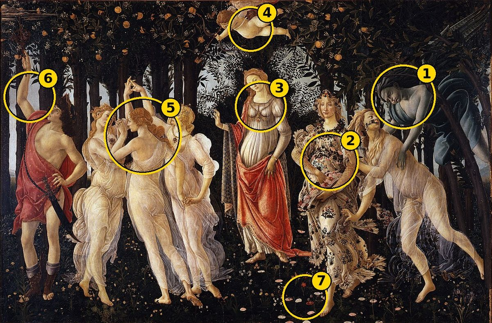

Hidden in the Frame · Uffizi Gallery, Florence
Primavera (Spring)
Sandro Botticelli · c. 1480 · Tempera on panel · Room 10–14

The story
The painting probably hung in the palace of a young Medici, most likely made for his wedding. It is not a landscape but a story you read like a comic strip – only from right to left. It tells how love transforms a person step by step: from raw desire to a gaze lifted towards heaven.
Details to look for
- Zephyr, the west wind, bluish and cold like a winter storm, bursts out of the trees and seizes the nymph Chloris. She turns in panic – and at that very moment flowers spill from her mouth. The violence of the beginning already holds the seed of something beautiful.
- Next to her stands the same woman again, transformed into Flora, goddess of spring. The hunted girl has become a confident woman scattering roses. In Ovid she says: “I who am now called Flora was once Chloris.”
- Venus stands in the centre, slightly set back, like a hostess greeting her guests. The trees open behind her like a halo. Here she is not seductive love, but dignified, spiritual love.
- Above her floats blindfolded Cupid – love strikes blindly. His arrow aims at the middle Grace. She has already turned towards Mercury: in a moment she will fall in love.
- The Three Graces dance hand in hand in veils you can see their bodies through. They stand for giving, receiving and giving back – the movement that keeps love alive.
- Mercury on the far left half turns his back to us and pushes the clouds away with his staff. He already looks out of the picture, upwards. This is the final step: love leads the eye away from the body, towards the divine.
- The ground is a carpet of about 190 kinds of flowers, all botanically identifiable, all blooming in Tuscany in spring. The golden oranges above are a Medici symbol – the family lives, so to speak, in this paradise.
What it says
Love transforms. What begins as raw desire becomes beauty, culture and finally insight. And floating above it all is the message: Florence under the Medici is this eternal spring.
Open the full guide – zoom, audio guide, German & Japanese →